Your files,
your interface.
Ose is a markdown editor for your second-brain vault. You and your AI agent work on the same plain files, but you get a graphical interface over them.
The editor
A markdown editor with two modes.
Rich is the page as a document. Source is the raw markdown. There is no live preview. Ose changes only the lines you edit and leaves the rest of the file as it was.

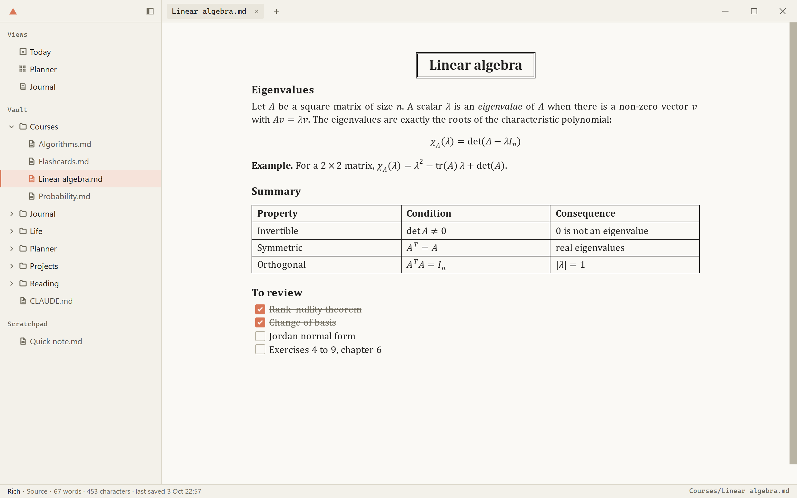

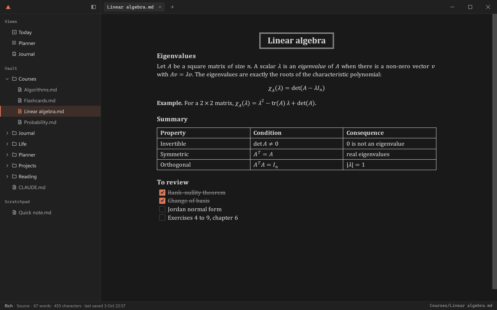

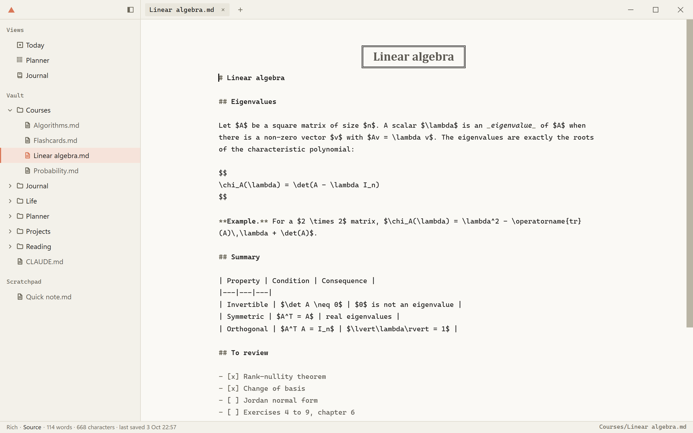

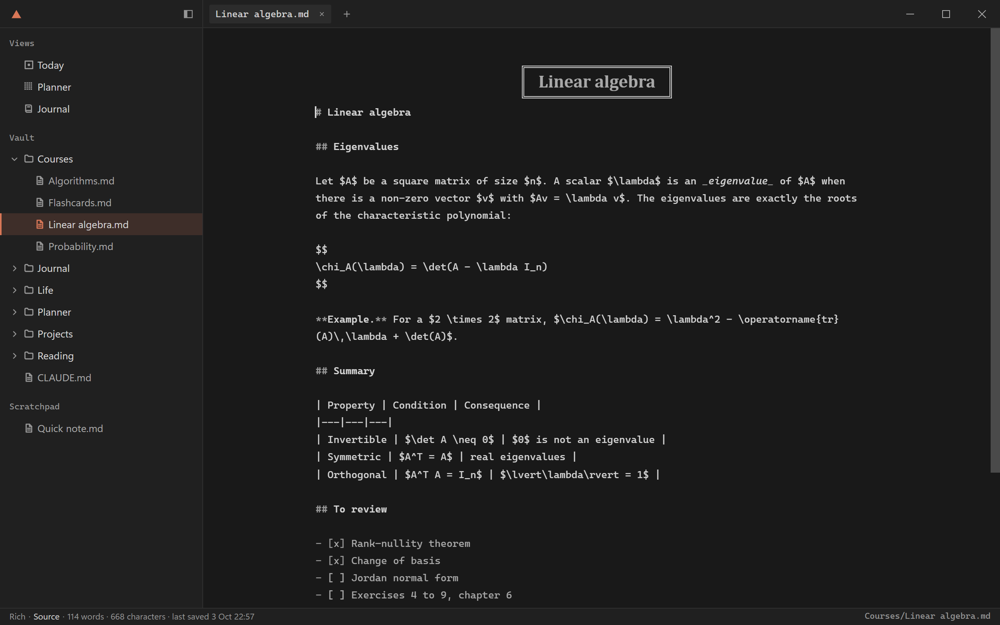
Views
A view draws plain files as an interface.
I built Ose for myself, so it ships with the three views I use: Today, Planner and Journal. You can use them or delete them.
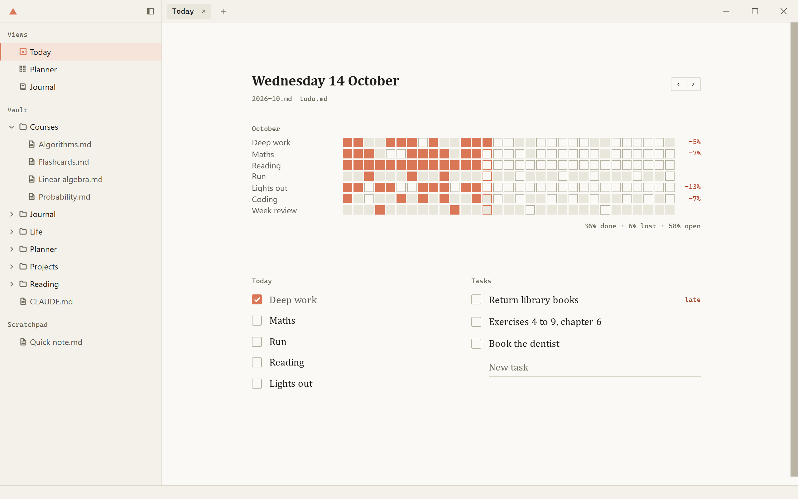
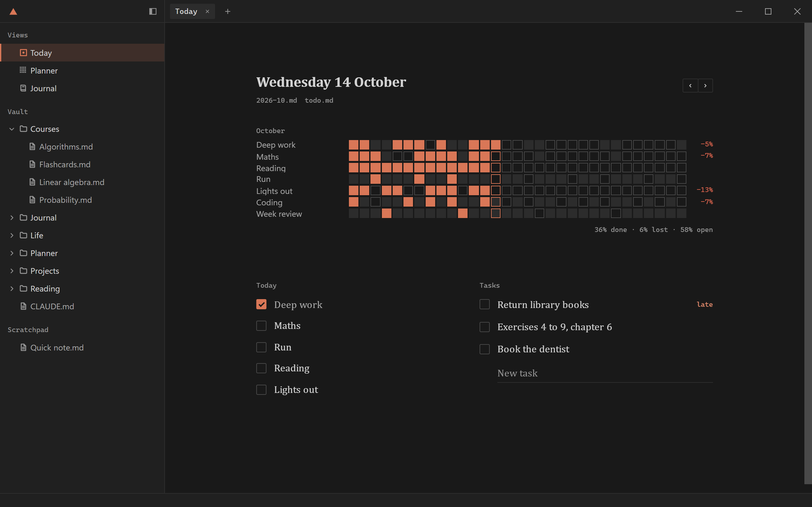
Your own views
Your own view takes minutes.
Your AI agent can build a view over your own markdown files. A checklist becomes a board, and a table of books becomes a shelf. How a view is made.
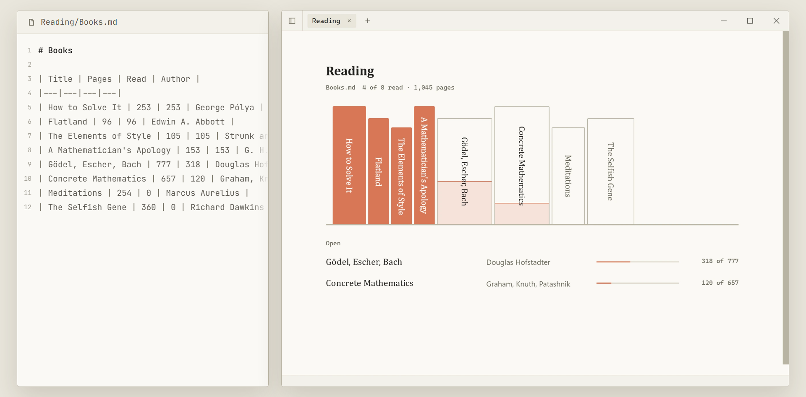
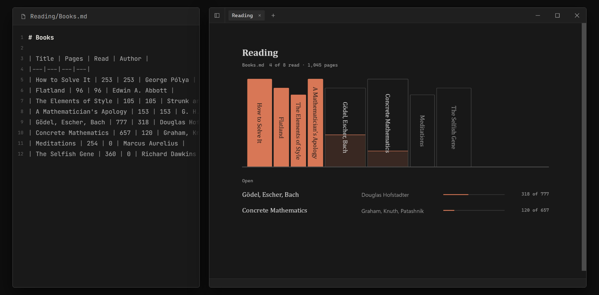

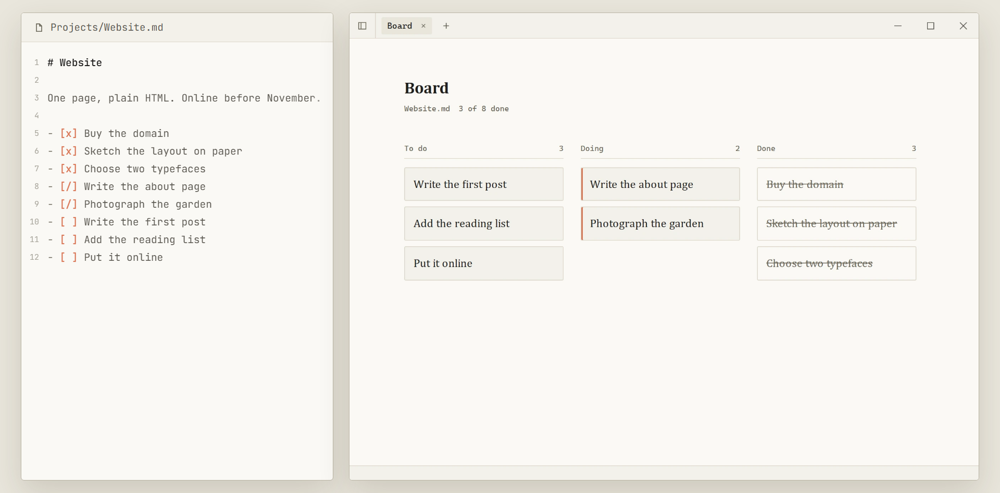

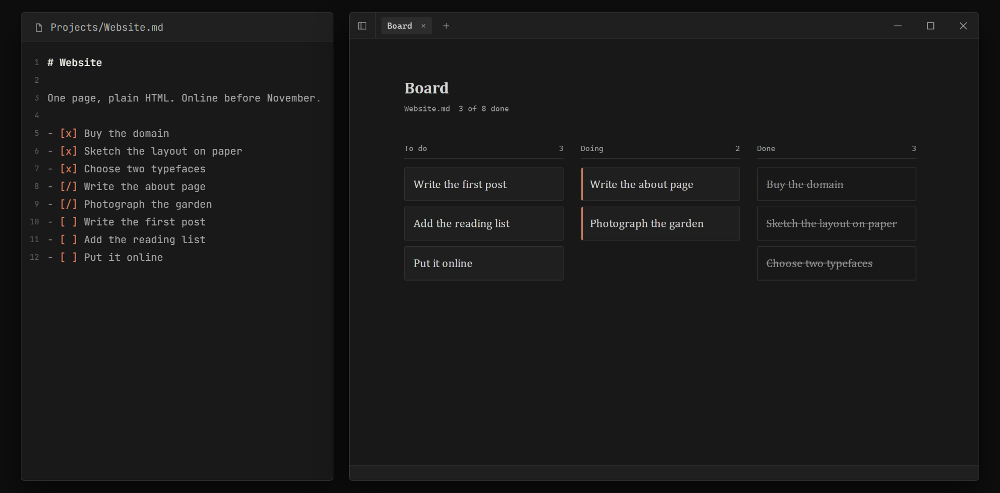

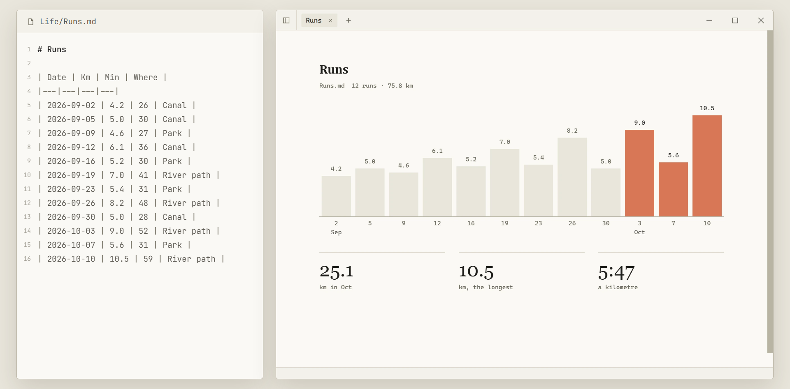

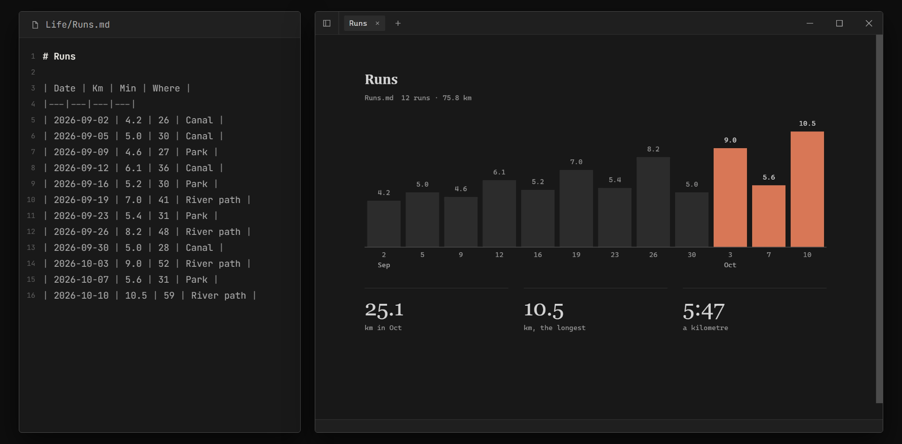

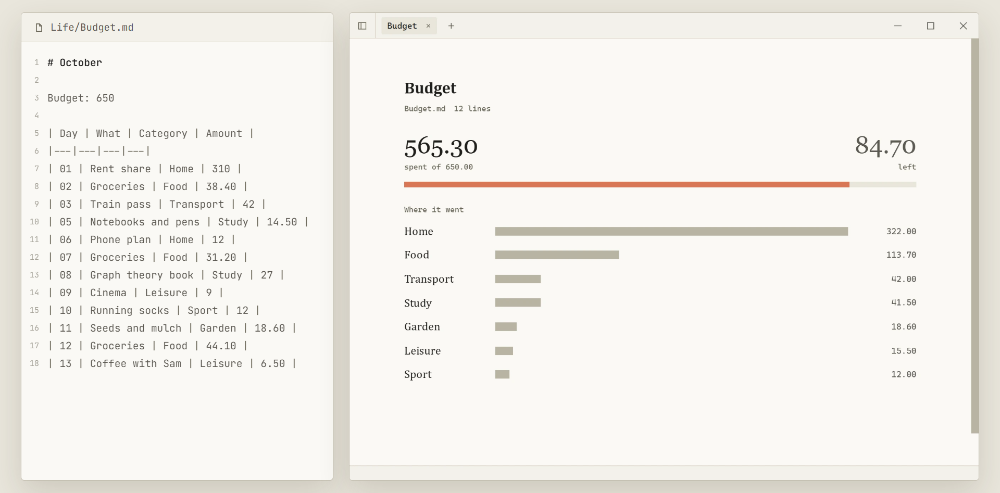

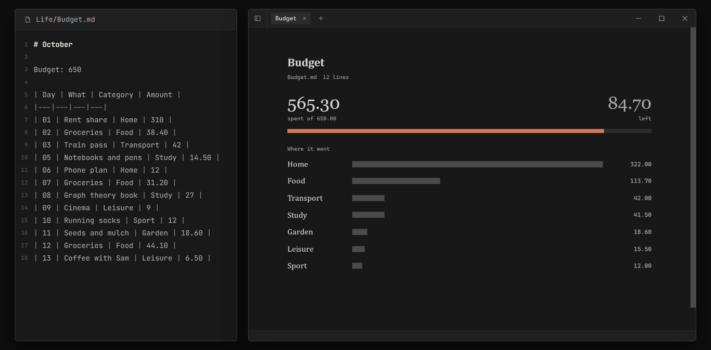

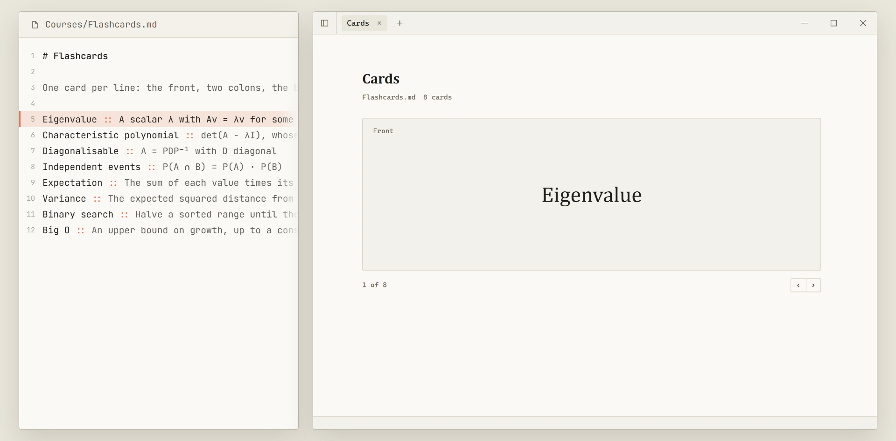

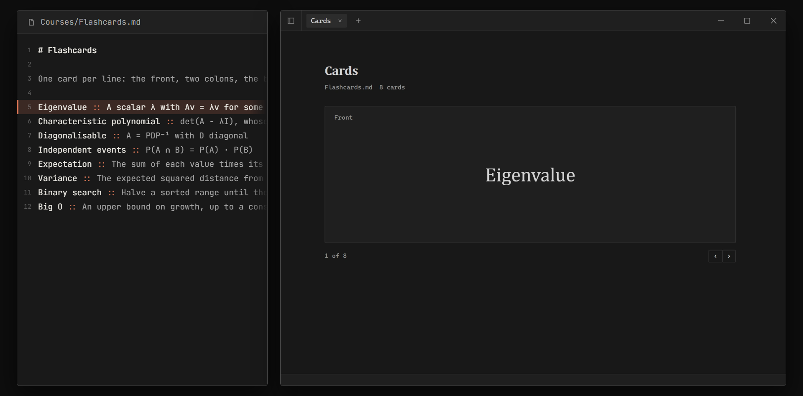
These five are samples. They do not ship with Ose.
Reasons
Why use Ose?
Humans work best with graphical interfaces. AI agents work best with text. Ose gives each what it needs: plain markdown files for the agent, and an interface built from those files for you.
Plain files
Most second-brain apps keep your notes in their own database. Ose keeps them as markdown files on your disk, so you can leave at any time.
Private
Ose has no account, no sync and no telemetry. It uses the network only to check for updates.
Yours to change
Ose is open source and lightweight. Custom views need no plugins: you and your agent edit the source code and get the behaviour you want in minutes.
Download Ose.
I do not code-sign the builds, so the first launch asks once: More info › Run anyway on Windows, Privacy & Security › Open Anyway on a Mac. Ose then updates itself.